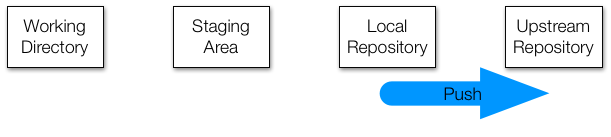

git config --global user.name "Your Name"
git config --global user.mail "your@email.com"5 Git and GitHub
5.1 Introduction
Here we provide some details on Git and GitHub. However, we are only scratching the surface. To learn more about this topic, we highly recommend the following resources:
- Codeacademy: https://www.codecademy.com/learn/learn-git
- GitHub Guides: https://guides.github.com/activities/hello-world/
- Try Git tutorial: https://try.github.io/levels/1/challenges/1
- Happy Git and GitHub for the useR: http://happygitwithr.com/
5.2 Why use Git and GitHub?
There are three main reasons to use Git and GitHub.
Sharing: Even if we do not take advantage of the advanced and powerful version control functionality, we can still use Git and GitHub to share our code.
Collaborating: Once you set up a central repo, you can have multiple people make changes to code and keep versions synched. GitHub provides a free service for centralized repos. GitHub also has a special utility, called a pull request, that can be used by anybody to suggest changes to your code. You can easily either accept or deny the request.
Version control: The version control capabilities of Git permit us to keep track of changes we make to our code. We can also revert back to previous versions of files. Git also permits us to create branches in which we can test out ideas, then decide if we merge the new branch with the original.
Here we focus on the sharing aspects of Git and GitHub and refer the reader to the links above to learn more about this powerful tool.
5.3 GitHub accounts
After installing git1, the first step is to get a GitHub account. Basic GitHub accounts are free. To do this, go to GitHub where you will see a box in which you can sign up.
Once you have a GitHub account, you are ready to connect Git and RStudio to this account.
A first step is to let Git know who we are. This will make it easier to connect with GitHub. We start by opening a terminal window in RStudio (remember you can get one through Tools in the menu bar). Now we use the git config command to tell Git who we are. We will type the following two commands in our terminal window:
5.4 GitHub repositories
You are now ready to create a GitHub repository (repo). The general idea is that you will have at least two copies of your code: one on your computer and one on GitHub. If you add collaborators to this project, then each will have a copy on their computer. The GitHub copy is usually considered the master copy that each collaborator syncs to. Git will help you keep all the different copies synced.
As mentioned, one of the advantages of keeping code on a GitHub repository is that you can easily share it with potential employers interested in seeing examples of your work. Because many data science companies use version control systems, like Git, to collaborate on projects, they might also be impressed that you already know at least the basics.
The first step in creating a repo for your code is to initialize on GitHub. Because you already created an account, you will have a page on GitHub with the URL http://github.com/username.
To create a repo, first log in to your account by clicking the Sign In button on https://github.com. You might already be signed in, in which case the Sign In button will not show up.
Once on your account, you can click on Repositories and then click on New to create a new repo:
You will then want to choose a good descriptive name for the project. In the future, you might have dozens of repos so keep that in mind when choosing a name. Here we will use homework-0. We recommend you make the repo public. If you want to keep it private, you will have to pay a monthly charge.
You now have your first repo on GitHub. The next step will be to clone it on your computer and start editing and syncing using Git.
To do this, it is convenient to copy the link provided by GitHub specifically to connect to this repo, using Git as shown below. We will later need to copy and paste this so make sure to remember this step.
5.5 Overview of Git
The main actions in Git are to:
- pull changes from the remote repo, in this case the GitHub repo
- add files, or as we say in the Git lingo stage files
- commit changes to the local repo
- push changes to the remote repo, in our case the GitHub repo
To effectively permit version control and collaboration in Git, files move across four different areas:

But how does it all get started? There are two ways: we can clone an existing repo or initialize one. We will explore cloning first.
5.5.1 Clone
We are going to clone an existing Upstream Repository. You can see it on GitHub here: https://github.com/rairizarry/murders. By visiting this page, you can see multiple files and directories. This is the Upstream Repository. By clicking the green clone button, we can copy the repo’s URL https://github.com/rairizarry/murders.git.
But what does clone mean? Rather than download all these files to your computer, we are going to actually copy the entire Git structure, which means we will add the files and directories to each of the three local stages: Working Directory, Staging Area, and Local Repository. When you clone, all three are exactly the same to start.
You can quickly see an example of this by doing the following. Open a terminal and type:
pwd
mkdir git-example
cd git-example
git clone https://github.com/rairizarry/murders.git
cd murders/Users/wcresko/Desktop/BioE_R_book
mkdir: git-example: File exists
fatal: destination path 'murders' already exists and is not an empty directory.You now have cloned a GitHub repo and have a working Git directory, with all the files, on your system.
ls_book
_quarto.yml
BioE_Stat_Rscripts.Rproj
cover.png
docs
Git_GitHub_files
Git_GitHub.html
Git_GitHub.qmd
Git_GitHub.rmarkdown
git-example
images
index.qmd
intro.qmd
new-file.txt
R_basics.qmd
references.bib
references.qmd
summary.qmd
Tidyverse.qmd
tmp.txt
The Working Directory is the same as your Unix working directory. When you edit files using an editor such as RStudio, you change the files in this area and only in this area. Git can tell you how these files relate to the versions of the files in other areas with the command git status:

If you check the status now, you will see that nothing has changed and you get the following message:
git statusOn branch main
Your branch is ahead of 'origin/main' by 9 commits.
(use "git push" to publish your local commits)
Changes not staged for commit:
(use "git add <file>..." to update what will be committed)
(use "git restore <file>..." to discard changes in working directory)
modified: _quarto.yml
modified: docs/index.html
Untracked files:
(use "git add <file>..." to include in what will be committed)
Git_GitHub.html
Git_GitHub.qmd
Git_GitHub.rmarkdown
Git_GitHub_files/
docs/Git_GitHub.html
git-example/
tmp.txt
no changes added to commit (use "git add" and/or "git commit -a")Now we are going to make changes to these files. Eventually, we want these new versions of the files to be tracked and synched with the upstream repo. But we don’t want to keep track of every little change: we don’t want to sync until we are sure these versions are final enough to share. For this reason, edits in the staging area are not kept by the version control system.
To demonstrate, we add a file to the staging area with the git add command. Below we create a file using the Unix echo command just as an example (in reality you would use RStudio):
echo "test" >> new-file.txtWe are also adding a temporary file that we do not want to track at all:
echo "temporary" >> tmp.txtNow we can stage the file we eventually want to add to our repository:
git add new-file.txtNotice what the status says now:
git statusOn branch main
Your branch is ahead of 'origin/main' by 9 commits.
(use "git push" to publish your local commits)
Changes to be committed:
(use "git restore --staged <file>..." to unstage)
modified: new-file.txt
Changes not staged for commit:
(use "git add <file>..." to update what will be committed)
(use "git restore <file>..." to discard changes in working directory)
modified: _quarto.yml
modified: docs/index.html
Untracked files:
(use "git add <file>..." to include in what will be committed)
Git_GitHub.html
Git_GitHub.qmd
Git_GitHub.rmarkdown
Git_GitHub_files/
docs/Git_GitHub.html
git-example/
tmp.txt
Because new-file.txt is staged, the current version of the file will get added to the local repository next time we commit, which we do as follows:
git commit -m "adding a new file" [main 3097f96] adding a new file
1 file changed, 1 insertion(+)We have now changed the local repo, which you can confirm using
git status
However, if we edit that file again, it changes only in the working directory. To add to the local repo, we need to stage it and commit the changes that are added to the local repo:
echo "adding a line" >> new-file.txt
git add new-file.txt
git commit -m "adding a new line to new-file"[main 0cca4b3] adding a new line to new-file
1 file changed, 1 insertion(+)Note that this step is often unnecessary in our uses of Git. We can skip the staging part if we add the file name to the commit command like this:
echo "adding a second line" >> new-file.txt
git commit -m "minor change to new-file" new-file.txt[main e147469] minor change to new-file
1 file changed, 1 insertion(+)We can keep track of all the changes we have made with:
git log new-file.txtcommit e1474696a0e3a50f687ce04e78401f6bd9e2ea31
Author: wcresko <wcresko@uoregon.edu>
Date: Mon Apr 21 10:39:36 2025 -0700
minor change to new-file
commit 0cca4b3c95f82eaece94176d62b9cb93b0902c1c
Author: wcresko <wcresko@uoregon.edu>
Date: Mon Apr 21 10:39:36 2025 -0700
adding a new line to new-file
commit 3097f96acbf4e93997275c73acb0e230d5328d20
Author: wcresko <wcresko@uoregon.edu>
Date: Mon Apr 21 10:39:36 2025 -0700
adding a new file
commit dede17a4cd172f0d755497d7bbd7c570b9b45852
Author: wcresko <wcresko@uoregon.edu>
Date: Mon Apr 21 10:36:40 2025 -0700
minor change to new-file
commit 07c800c4c7091842f8099f430d9b7f3b283d8640
Author: wcresko <wcresko@uoregon.edu>
Date: Mon Apr 21 10:36:40 2025 -0700
adding a new line to new-file
commit 07ae6be63a7f5f5055ae5dd5848210a757c044f2
Author: wcresko <wcresko@uoregon.edu>
Date: Mon Apr 21 10:36:40 2025 -0700
adding a new file
commit 10c4ba7c0f45cf55b1ab16a64aa4e2aee2130d4f
Author: wcresko <wcresko@uoregon.edu>
Date: Mon Apr 21 10:34:45 2025 -0700
minor change to new-file
commit b189a01863d757e7aec2f8e9d4933d68e1618084
Author: wcresko <wcresko@uoregon.edu>
Date: Mon Apr 21 10:34:45 2025 -0700
adding a new line to new-file
commit 1b9acc3dd809cb98de26c8fc1cbab8466073c4d8
Author: wcresko <wcresko@uoregon.edu>
Date: Mon Apr 21 10:34:45 2025 -0700
adding a new file
commit 07d82026672391cf032c3d92536179eda9573302
Author: wcresko <wcresko@uoregon.edu>
Date: Mon Apr 21 10:33:08 2025 -0700
minor change to new-file
commit 086049bef667d122333856f6d928ee5f74c4d810
Author: wcresko <wcresko@uoregon.edu>
Date: Mon Apr 21 10:33:08 2025 -0700
adding a new line to new-file
commit 74f2cdb3c73b697106cf1b6b3727bda0c88acd76
Author: wcresko <wcresko@uoregon.edu>
Date: Mon Apr 21 10:33:08 2025 -0700
adding a new fileTo keep everything synced, the final step is to push the changes to the upstream repo. This is done with the git push command like this:
git push
However, in this particular example, you will not be able to do this because you do not have permission to edit the upstream repo. If this was your repo, you could.
If this is a collaborative project, the upstream repo may change and become different than our version. To update our local repository to be like the upstream repo, we use the command fetch:
git fetch
And then to make these copies to the staging and working directory areas, we use the command:
git mergeHowever, we often just want to change both with one command. For this, we use:
git pull
We will learn in Section @ref(rstudio-git) how RStudio has buttons to do all this. The details provided here should help you understand what happens in the background.
5.6 Initializing a Git directory
Now let’s learn the second way we can get started: by initializing a directory on our own computer rather than cloning.
Suppose we already have a populated local directory and we want to turn this directory into a collaborative GitHub repository. The most efficient way of achieving this is by initializing the local directory.
To demonstrate how to do this we will initialize the gun murders directory we created in Section @ref(prep-project). Note that we already created a directory with several subdirectories on our computer but we do not yet have a Git local repo or GitHub upstream repo.
We start by creating a new repo on our GitHub page. We click on the New button:
At this moment, we can start a terminal and cd into our local projects directory. In our example, it would be:
cd ~/projects/murdersWe then intialize the directory. This turns the directory into a Git directory and Git starts tracking:
git initAll the files are now only in our working directory; no files are in our local repo or on GitHub.
The next step is to connect the local repo with the GitHub repo. In a previous example, we had RStudio do this for us. Now we need to do it ourselves. We can by adding any of the files and committing it:
git add README.txt
git commit -m "First commit. Adding README.txt file just to get started"We now have a file in our local repo and can connect it to the upstream repo, which has url: https://github.com/rairizarry/murders.git.
To do this, we use the command git remote add.
git remote add origin `https://github.com/rairizarry/murders.git`We can now use git push since there is a connection to an upstream repo:
git pushIn Section @ref(organizing) we continue to work with this example, as we demonstrate how we can use RStudio to work with Git and keep a project synced on GitHub.
5.7 Using Git and GitHub in RStudio
While command line Git is a powerful and flexible tool, it can be somewhat daunting when we are getting started. RStudio provides a graphical interface that facilitates the use of Git in the context of a data analysis project. We describe how to use this RStudio feature to do this here.
Now we are ready to start an RStudio project that uses version control and stores the code on a GitHub repo. To do this, we start a project but, instead of New Directory, we will select Version Control and then we will select Git as our version control system:
The repository URL is the link you used to clone. In Section @ref(github-repos), we used https://github.com/username/homework-0.git as an example. In the project directory name, you need to put the name of the folder that was generated, which in our example will be the name of the repo homework-0. This will create a folder called homework-0 on your local system. Once you do this, the project is created and it is aware of the connection to a GitHub repo. You will see on the top right corner the name and type of project as well as a new tab on the upper right pane titled Git.
! If you select this tab, it will show you the files on your project with some icons that give you information about these files and their relationship to the repo. In the example below, we already added a file to the folder, called code.R which you can see in the editing pane.
We now need to pay attention to the Git pane. It is important to know that your local files and the GitHub repo will not be synced automatically. As described in Section @ref(git-overview), you have to sync using git push when you are ready. We show you can do this through RStudio rather than the terminal below.
Before we start working on a collaborative project, usually the first thing we do is pull in the changes from the remote repo, in our case the one on GitHub. However, for the example shown here, since we are starting with an empty repo and we are the only ones making changes, we don’t need to start by pulling.
In RStudio, the status of the file as it relates to the remote and local repos are represented in the status symbols with colors. A yellow square means that Git knows nothing about this file. To sync with the GitHub repo, we need to add the file, then commit the change to our local Git repo, then push the change to the GitHub repo. Right now, the file is just on our computer. To add the file using RStudio, we click the Stage box. You will see that the status icon now changes to a green A.
Note: we are only adding the code.R file. We don’t necessarily need to add all the files in our local repo to the GitHub repo, only the ones we want to keep track of or the ones we want to share. If our work is producing files of a certain type that we do not want to keep track of, we can add the suffix that defines these files to the .gitignore file. More details on using .gitignore are included here: https://git-scm.com/docs/gitignore. These files will stop appearing in your RStudio Git pane. For the example shown here, we will only be adding code.R. But, in general, for an RStudio project, we recommend adding both the .gitignore and .Rproj files.
Now we are ready to commit the file to our local repo. In RStudio, we can use the Commit button. This will open a new dialog window. With Git, whenever we commit a change, we are required to enter a comment describing the changes being committed.
In this case, we will simply describe that we are adding a new script. In this dialog box, RStudio also gives you a summary of what you are changing to the GitHub repo. In this case, because it is a new file, the entire file is highlighted as green, which highlights the changes.
Once we hit the commit button, we should see a message from Git with a summary of the changes that were committed. Now we are ready to push these changes to the GitHub repo. We can do this by clicking on the Push button on the top right corner:
We now see a message from Git letting us know that the push has succeeded. In the pop-up window we no longer see the code.R file. This is because no new changes have been performed since we last pushed. We can exit this pop-up window now and continue working on our code.
If we now visit our repo on the web, we will see that it matches our local copy.
Congratulations, you have successfully shared code on a GitHub repository!
https://learngitbranching.js.org/
5.8 Clone the repository
- First make a new directory into which you will clone our course repository
- This will prevent you from overwriting any of the documents you have have edited
- And it’s good practice to do it again
- You should work through the terminal application and use Unix to do this
- Open the terminal and navigate to your new directory and type the following:
git clone https://github.com/wcresko/evomics_stat_2019.git5.9 Update the repository
- Now to update the repository you just need to use these commands
git status
git fetch
git status
git merge origin/master- The first command just tells you if anything has changed
- If so, do the second!
- This is much safer than
git pull
https://rafalab.github.io/dsbook/accessing-the-terminal-and-installing-git.html↩︎